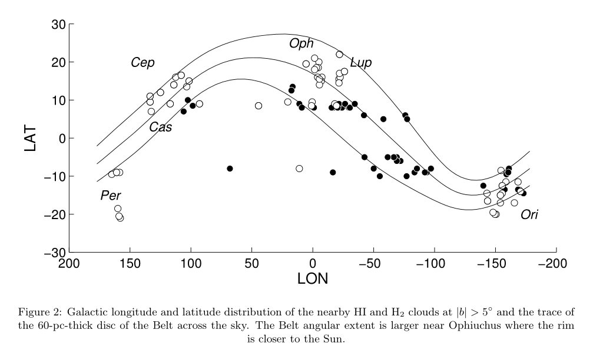
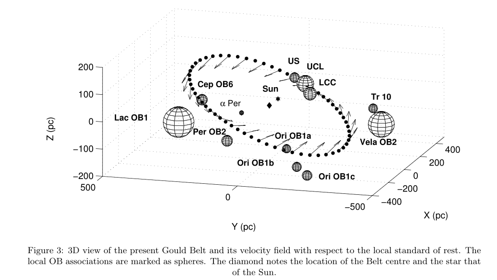

赫罗图
赫罗图：O、B、A型称为“早型星”；F和G型称“中间光谱型”；K和M型称为“晚型星”。 OB星协是由非常年轻的光谱类型“ O”和“ B”的恒星组成的大型恒星团的非常松散的形式

古尔德带
古尔德带包含了很多年轻的大质量O型和B型恒星，以及一些星云，它们构成一个局部的扁平结构，与银河系平面倾斜约16~20度。从地球视角看，这些恒星在天球投影中形成了一个带状环。 古尔德带处于本地泡中。


参考：The Gould Belt, star formation, and the local interstellar medium